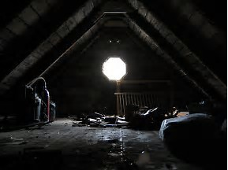

You slowly ascend the stairs it takes you to up to the attic. You can hear the draft from the storm outside and you feel like you are being watched. Rats scurry at your feet as you move further into the cold, desolate room. In the corner you see a briefcase with a lock matching the key you found. You open the briefcase and find old photographs of a young woman dressed in white, and a large clear, smooth stone with a note attached to it.
To any who find this, I hate the beast I am becoming. I hunger for the blood of man. I am not who I once was, even my tears are the same as the blood of my victims. I do not wish to kill anymore, so I am locking myself away in order to keep from hurting anymore innocents. If anyone should find this please I urge you to turn back from this place. If you are brave enough then I beg you to help me. Place the stone in the hole above the hearth to free me from this curse. If you have found me before my curse is lifted then I am talking to a corpse. "Name Not Ledgible"